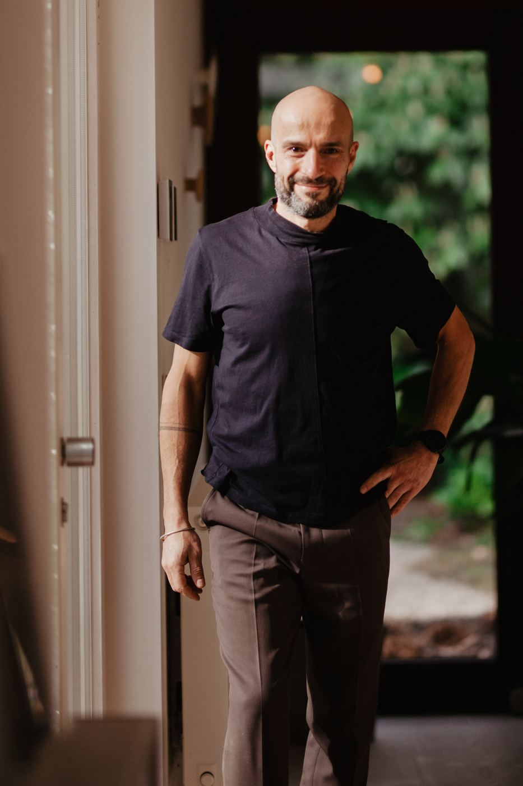
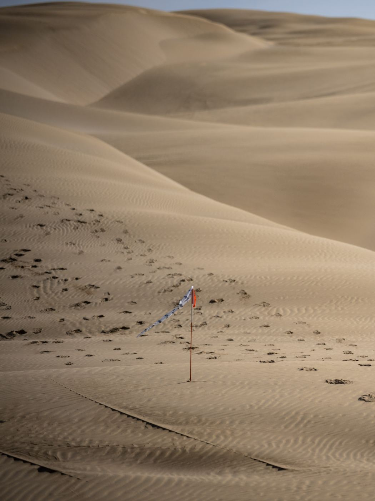
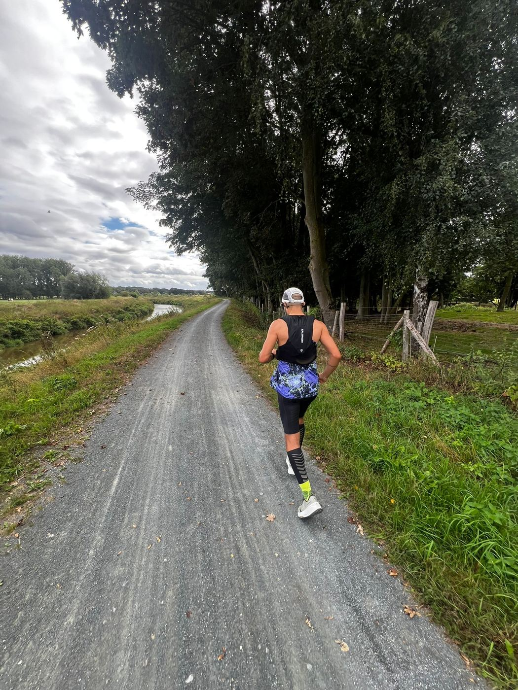
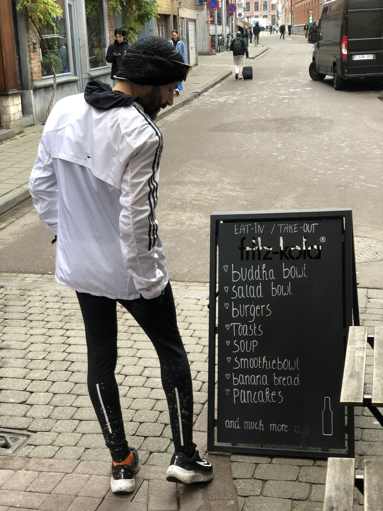

Verhaal
Ik loop niet weg. Ik loop terug.
Het verhaal van Maziar Toghraie, in zijn eigen woorden.

© Marathon des Sables
© Elke Smit Photography
Ik ben niet boos op wat me overkomen is. Integendeel. De pijn heeft me gevormd.Maziar

© Elke Smit Photography